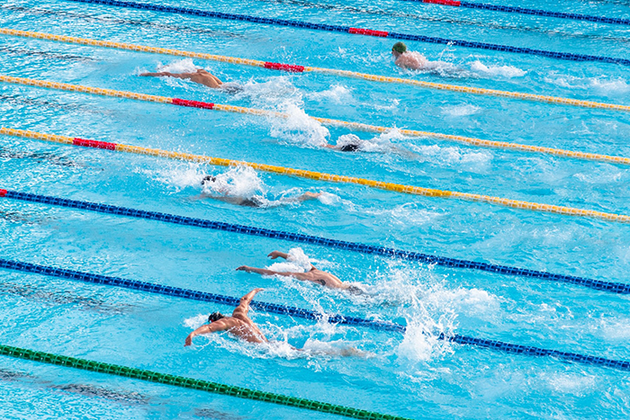
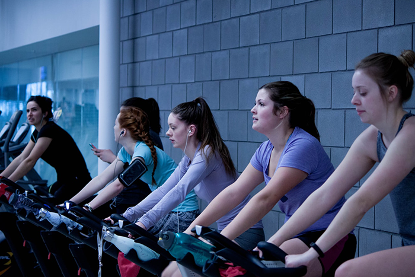

Home
☰
有氧運動(Aerobic exercise或 Cardio)，又可稱之為有氧訓練、需氧運動、帶氧運動，而在進行這類運動時，呼吸是呈現規律性的呼氣與吸氣，肌肉方面亦呈現規律性的緊張與放鬆相互交替。
人體在運動時會需要ATP三磷酸腺苷來提供能量，而人體預存的ATP能量只能維持15秒，則接下來的90-120秒，就必須由血糖在無氧狀態下，合成ATP來提供能量。在90-120秒之後，則會由血液中的糖分、脂肪酸、胺基酸等營養分子，在有氧狀態下，合成ATP來提供熱量。因此，所謂的有氧運動，指的是持續超過90-120秒，必須由有氧代謝合成能量的運動。
以上是對於有氧運動比較理論式的解說，大部分人可能還不是能很理解。從簡單的定義來說，就是當你的心率到達最大心跳率的50%-90%時，可以認定為正在進行著有氧訓練
根據美國運動醫學會將有氧運動的種類大致分為以下三種：
1.散步、慢跑、快走，這類可邊做甚至還能說話的輕鬆有氧。
2.有氧舞蹈、游泳、快跑，這類會讓運動者本身喘的有氧運動。
3.飛輪、籃球、網球、衝刺，這類較激烈性的有氧運動。
所有的學說及報導都指向每一次的有氧運動都需要在20分鐘以上才會達到瘦身減脂的效果。有氧運動也是一個最簡單的燃燒卡路里的方式，每天若是多消耗了300卡路里，那麼身體就要燃燒300卡(脂肪)的熱量出來維持細胞所需。
以下介紹幾個基本的有氧運動
快走也算是一項有氧運動，在快走之後緊接著就是跑步了。跑步可以說是所有有氧運動裡最容易接觸的，只要擁有一雙鞋子，便能開始。然而跑步會依每個人身體狀態而有所不同，像是馬拉松選手在跑馬時的速度對於他們來說是有氧，對一般人來說可能就是衝刺了，選手跑一小時的高速，一般人可能只要一分鐘就上氣不接下氣了，這類的情況就是身體狀態上的差異。
游泳可以說是非常棒的一項有氧運動選擇，因為水中有阻力及浮力，不會給關節太多的壓力，甚至需要更多的力量去對抗阻力，在有氧效果上非常顯著。另外，由於游泳需要克服的是水的阻力並非重力，因此肌肉和關節較不容易受傷，能有效保護膝關節。

飛輪是近些年來非常流行的一項結合有氧及肌力訓練的運動。但這項運動必須擁有足夠的知識與技巧。因此，建議最開始先從健身房所提供的飛輪課程開始學起，經由教練指導，可以適當的調整自己的強度，以免造成橫紋肌溶解。對於有膝關節跑步不適的人，也建議可以試試飛輪訓練。最重要的是這項運動需要保持正確的姿勢，方法得當便能得到良好的心肺有氧訓練唷。

跳繩的購買方便且便宜，使用上為了保持節奏所以同時能訓練到協調性。在力量的強度增加方面，許多運動員也會利用跳繩來增強垂直彈跳的能力。
有氧運動其實就是需要靠大量的氧氣燃燒脂肪產生能量，增加心臟跳動和呼吸延長運動時間，並建立肌耐力，所以也有人認為在運動中能順利正常說話都算是有氧運動。
至於無氧運動，則是當其在進行時的呼吸會較困難些、心跳急速，最大的心跳率可高達90%以上。無氧運動是指肌肉在缺氧(氧氣攝取量非常低)的狀態下高速劇烈運動，肌肉在不需要依靠氧氣的情況下，只會瘋狂地燃燒碳水化合物。由於速度過快與爆發力過猛，人體內的醣分來不及經過氧氣的分解，而不得不依靠「無氧功能」。
注意事項
勿空腹做有氧運動
從事有氧運動時一定要做熱身運動與緩和運動
心血管疾病或不適運動之疾病、症狀，建議先詢問醫師
運動前需先了解自己的身體狀況並做個人體能評估。